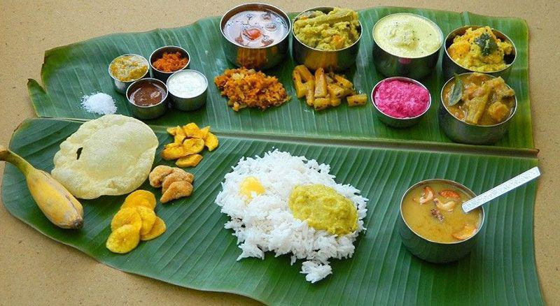

₹ 400

₹ 150

₹ 300

₹ 100

₹ 250
| RESTARENT NAME | ITEMS | IMAGES | PRICE |
|---|---|---|---|
| SUBBYYA GARI HOTEL | South Indian Thali |  | ₹ 400 |
| Aaloo 65 | |
₹ 150 |
|
| Jack Fruit Biryani | |
₹ 300 |
|
| Veg pulao | |
₹ 100 |
|
| Panner pulao | |
₹ 250 |